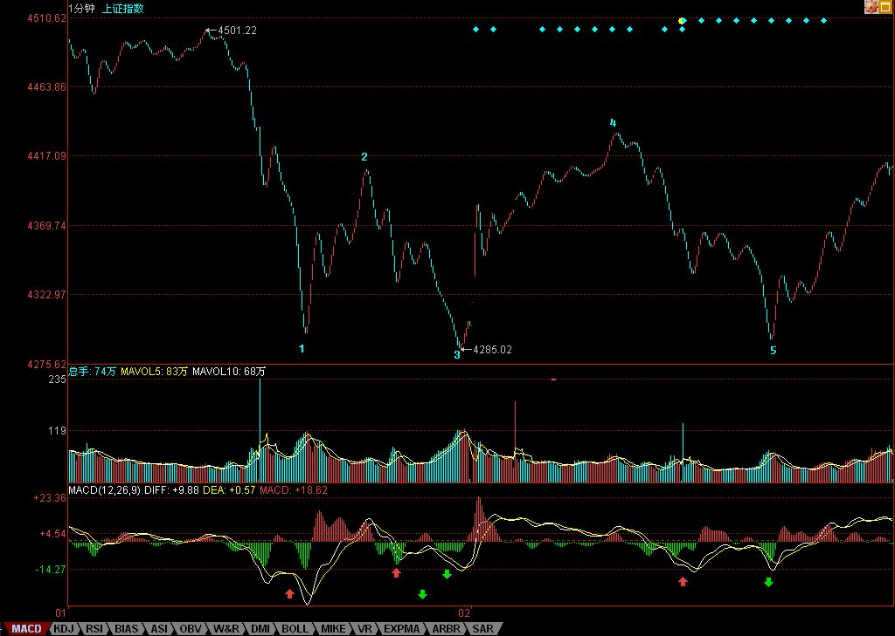

缠中说禅博客
缠中说禅 当代奇人，
一个永远只愿站立且希望探索、
展示人的所有潜能和可能的人，真实身份未明。

明天才是大盘短线的关键
(2007/08/02 16:06:21 周四)
对于新进的第三拨人，他们不想就此站上N个月的岗，必须要在这里奋力一搏，现在，比6月20、21日有很多有利的条件，技术上，MACD形态好多了，下面有前期两高点的连线，而上周的周线缺口，技术上有三周不补就以后再补的惯例，也就是说，新进来的一拨人，只要能顶住三周，至少可以把某些中线资金给忽悠进来了。因此，对于这拨人来说，别无选择地，必须守住前期高点连线，重新站稳5日线。
但是，这拨人也有可能最终毁了市场，为什么？这拨人如果急功近利地迅速突破4500点，引发大量新资金涌入，那么上半年的单边行情将不可避免。但目前国家对经济的总体判断与相应的对策，都在一个敏感时期，如此走势，必然导致目前对多头有利的舆论、政策环境发生极为不利的变动。目前，比印花税还要严厉的，就是关于交易制度、规则的改变，如果谁最终乱搞，把这东西给搞出来了，那么，才是真正恶劣的事情。
所以，虽然多头目前当然有能力快速突破4500点，但一个稳健的走势依然是必要的。在4500点附近进行合理的震荡，将对市场长远的发展有好处。甚至，在4000点到4500点进行一个长时间的大箱体震荡，也比又掀起一场连续N根周K线长阳的运动要强。
当然，市场往往不会按照理智的方式进行，市场往往就是醉生梦死疯一回，那么，对于如本ID一样第一拨进来的，一定要采取这样的策略，就是绝对不增仓，因为在3600点开始都买够了，现在还买是脑子水太多的表现。其次，采取保持仓位先卖后买打差价的策略，这样成本降低，就永远立于不败之地。第三，一定不要听任何人忽悠马上要冲多少多少，冲是别人的事情，我们的事情就是坐轿子，你有本身把轿子抬到华山顶上，我们也没意见，但只要有人抬不动，就一定要一脚把轿子给踹了。
个股方面，成分股继续打冲锋，一旦确认周线突破成立，二、三线股会跟上的。下面给出这次下来的一个分段。红绿箭头给出的是黄白线或柱子面积等的对比，看看就知道这些买卖点是完全可以当下判断的。现在，一个1分钟中枢已经形成，短线走势，就看这中枢的演化，一切当下判断。
这两天，北京的雨可露了面了，本ID也不想出去腐败了，免得哪条桥又搞一个N米深的水库回不了家。
今天可以回答各位问题到5点。
